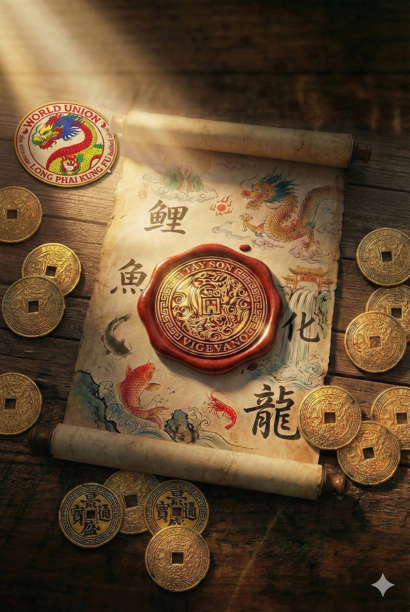
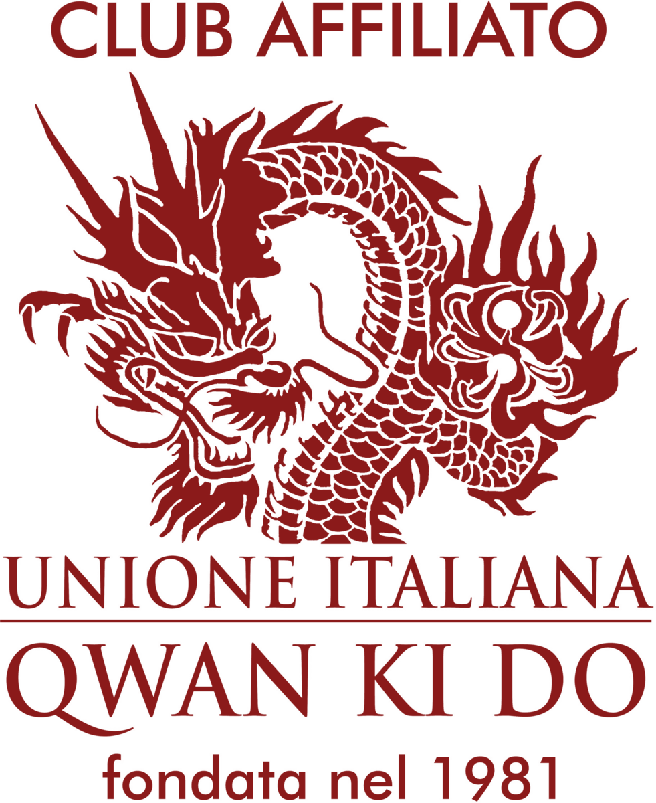

Vent'anni, un solo filo.
Il Tay Son nasce a Vigevano nel 2004 con un progetto esplicito: portare in città un kung fu tradizionale cino-vietnamita serio e ben radicato, formando nel tempo un nucleo stabile di praticanti all'interno dell'Unione Italiana Qwan Ki Do.
In vent'anni il club è cresciuto senza mai cambiare la propria identità di fondo. È rimasto un club di dimensioni contenute, in cui l'istruttore conosce per nome ogni allievo, e in cui le scelte — sugli orari, sui programmi, sulle partecipazioni — si fanno guardando alle persone, non ai numeri. È una scelta consapevole e costa lavoro: significa rinunciare all'espansione rapida in cambio di una qualità del percorso che ha senso sul lungo periodo.
A chi ci rivolgiamo
A chi cerca un'arte marziale seria, non una sua versione in abbreviato. A famiglie che vogliono un ambiente educativo coerente per i propri figli. Ad adulti che non sono più ventenni e sanno che una disciplina con un metodo può fare più di una palestra generica. A ragazzi che hanno voglia di provare qualcosa di impegnativo senza che sia necessariamente competitivo.
Il Qwan Ki Do è un'arte marziale esigente in modo diverso: chiede tempo, attenzione, e una certa disponibilità a lasciarsi correggere. Per questo non è per tutti, ma quasi sempre chi arriva con curiosità sincera trova qui qualcosa che gli resta.
Le gare non sono il fine. Sono uno strumento.
Nel Tay Son la competizione non è un traguardo. È un'occasione di confronto e di crescita: uno specchio che rimanda all'allievo il livello della propria preparazione, e all'istruttore la qualità del proprio insegnamento. Un momento per mettersi alla prova, conoscere altri praticanti, condividere il proprio percorso con chi lo sta facendo altrove.
Il club ha accompagnato alle gare generazioni di allievi, in Italia e fuori. Di questa storia conserviamo soprattutto le persone: chi è salito sul podio e chi non è mai salito, chi ha continuato a praticare e chi ha preso altre strade. La misura del nostro lavoro non è un numero di medaglie — è la postura con cui gli allievi tornano in palestra il lunedì successivo.
Dove ci alleniamo.
Il Tay Son è ospitato a Vigevano presso l'Accademia Pugilistica KBK, realtà storica del territorio attiva dal 1984 nelle discipline da combattimento. Condividiamo con KBK la palestra, ma soprattutto una visione comune: l'arte marziale come percorso serio, educativo, basato sulla costanza.
La struttura è attrezzata per il lavoro a mani nude, lo studio delle forme e la pratica delle armi tradizionali in sicurezza. È raggiungibile facilmente dal centro città; per i genitori che accompagnano i bambini è disponibile un'area attesa.
Indicazioni e mappa →- Indirizzo
- c/o Accademia Pugilistica KBK
Via Rovereto 3/A — 27029 Vigevano (PV) - Riferimento telefonico
- +39 331 6917268
- Orari di apertura
- Durante i corsi · vedi pagina corsi
- Affiliazione
- Unione Italiana Qwan Ki Do · WUQKD · Scuola Long Phái Kung Fu
KBK Fighting Club
Ringraziamo l'Accademia Pugilistica KBK, attiva a Vigevano dal 1984, per ospitare la nostra scuola nella propria palestra. Una collaborazione fondata sul rispetto reciproco tra discipline diverse e sulla condivisione di valori comuni: tecnica, disciplina, cultura del lavoro sul lungo periodo.

Il nostro stemma
La leggenda della Carpa
che diventa Drago
Osservando questa pergamena, sigillata con il nostro marchio in cera e circondata da monete come quella che ha ispirato le nostre origini, si svela l'antica leggenda della Carpa che diventa Drago — Lý Ngư Hóa Long.
Si narra che in un tempo antico, ancora prima del Vietnam e dell'Italia, ancora prima dell'Impero Romano e dell'Impero Cinese, la terra soffriva una terribile siccità. L'Imperatore di Giada sapeva che per portare la pioggia e salvare il mondo serviva un Drago potente, ma i Draghi erano scomparsi.
Per questo pose una sfida: chiunque avesse risalito la cascata della Porta del Drago avrebbe ottenuto il potere di comandare le nuvole. Non era una gara di vanità, ma una prova per trovare chi avesse il cuore e la forza per servire il mondo.
Molti animali fallirono, spezzati dalla forza dell'acqua perché la combatterono con la forza bruta.
La carpa riuscì nell'impresa grazie all'intelligenza. Non si oppose alla corrente. Attese con pazienza e, quando arrivò la terza onda — la più alta e violenta — non fuggì. Ci saltò dentro. Sfruttò quella potenza immensa per farsi sollevare oltre l'ostacolo, trasformandosi in un Drago d'oro che portò finalmente la pioggia.
Questa è la filosofia che portiamo in palestra ogni giorno. Non insegniamo ad evitare le difficoltà. Insegniamo a riconoscere la propria terza onda — e ad avere il coraggio di sfruttarla come spinta per volare in alto.

Parte di una scuola più grande.
Il Tay Son è un club affiliato all'Unione Italiana Qwan Ki Do, presente in Italia dal 1981 e oggi diretta tecnicamente dal Maestro Roberto Vismara. L'Unione Italiana aderisce alla World Union of Qwan Ki Do and Sino-Vietnamese Martial Arts (WUQKD), che coordina a livello internazionale la Scuola Long Phái Kung Fu, denominazione tecnica del kung fu tradizionale cino-vietnamita che pratichiamo. L'affiliazione garantisce riconoscimento tecnico e didattico, accesso al sistema dei gradi, copertura assicurativa e partecipazione alle competizioni ufficiali.
Vent'anni si raccontano meglio di persona.
Contattaci per una prova gratuita o per visitare il club durante un allenamento.